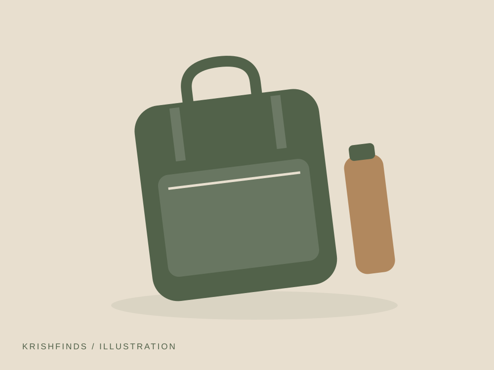
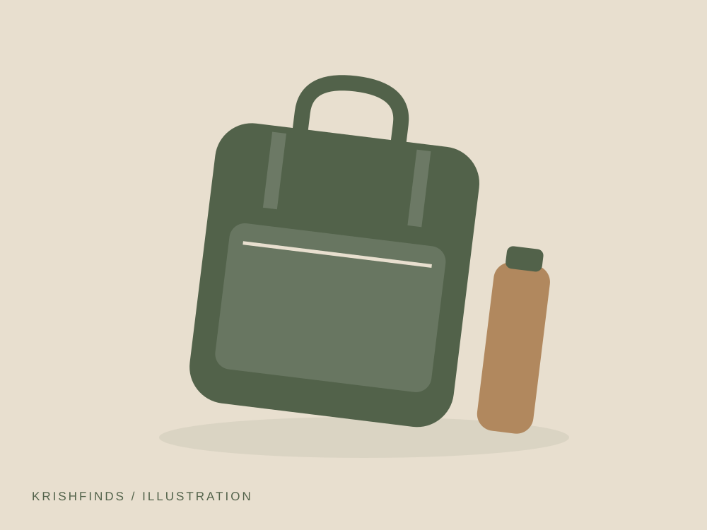
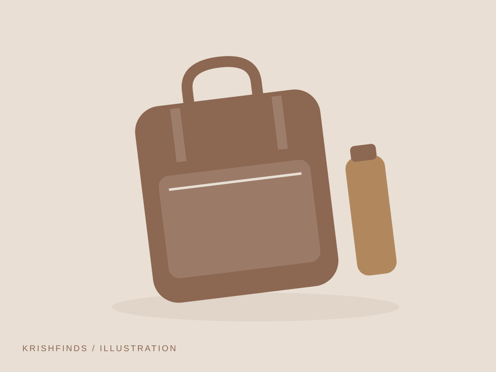
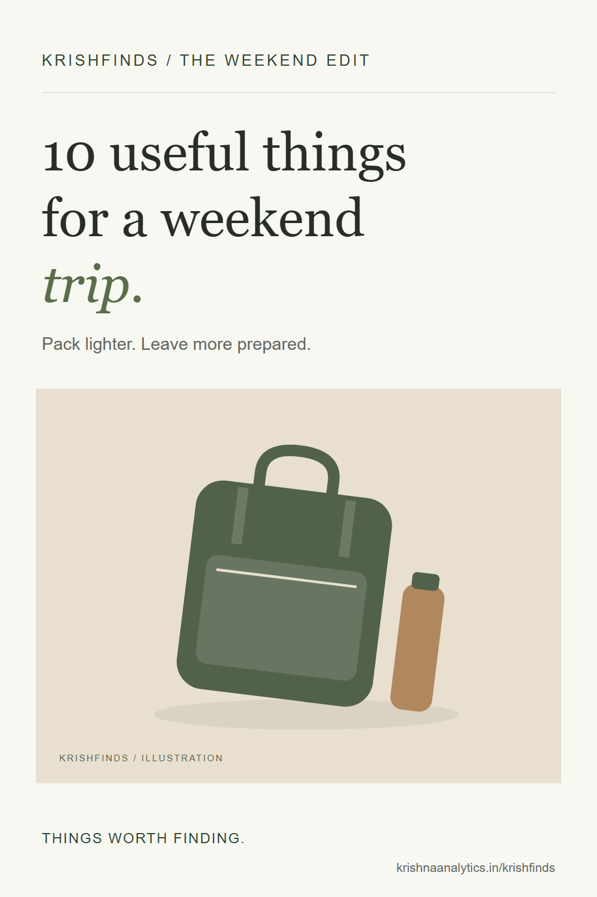

A weekend bag does not need to cover every possibility. Start with your destination, the forecast and what you already own. These ten ideas help organise the small essentials without turning a short break into a packing exercise.
Some links on KrishFinds are affiliate links. I may earn a commission if you purchase through them at no additional cost to you. As an Amazon Associate I earn from qualifying purchases. Read the disclosure.
These are generic product ideas, with illustrative placeholders. No specific model has been tested or rated here. Check current specifications and availability before buying.
Compact Travel Organizer

Give cables and small essentials a place. Think about whether it solves a recurring problem for you before adding it to your bag or workspace.
- Why it’s useful
- Separate compartments help prevent a hunt through the bottom of your bag.
- Best for
- Short trips with a few accessories.
- Considerations
- Measure the pouch against your bag; too many compartments add bulk.
20,000mAh Power Bank

A backup for long days away from a socket. Think about whether it solves a recurring problem for you before adding it to your bag or workspace.
- Why it’s useful
- Extra charging capacity can be useful when maps and tickets live on your phone.
- Best for
- Long journeys and shared charging.
- Considerations
- Check weight, charging output and your airline’s battery rules.
Reusable Water Bottle

A refillable bottle that fits your day bag. Think about whether it solves a recurring problem for you before adding it to your bag or workspace.
- Why it’s useful
- Easy access to water is helpful on walks and travel days.
- Best for
- Walking and train journeys.
- Considerations
- Check lid seals and washability; empty it before airport security.
Packing Cubes

Separate clean clothes from the rest of your bag. Think about whether it solves a recurring problem for you before adding it to your bag or workspace.
- Why it’s useful
- Small packing cubes make it easier to unpack only what you need.
- Best for
- Two-night stays and shared luggage.
- Considerations
- They organise space rather than increasing your baggage allowance.
Packable Rain Layer

A light extra layer for changing weather. Think about whether it solves a recurring problem for you before adding it to your bag or workspace.
- Why it’s useful
- A compact layer may save you from carrying a bulky jacket for a short shower.
- Best for
- Changeable forecasts.
- Considerations
- Water resistance varies. Check the material and seams for your conditions.
Reusable Earplugs

A small addition for noisier nights. Think about whether it solves a recurring problem for you before adding it to your bag or workspace.
- Why it’s useful
- A comfortable pair may help reduce background noise while resting.
- Best for
- Shared accommodation.
- Considerations
- Fit matters; do not use where hearing your surroundings is essential.
Document Pouch

Keep tickets and identification together. Think about whether it solves a recurring problem for you before adding it to your bag or workspace.
- Why it’s useful
- One dedicated place can simplify check-ins and station changes.
- Best for
- Trips with paper documents.
- Considerations
- A pouch is not a security device; keep important documents with you.
Foldable Tote

An extra bag that packs down small. Think about whether it solves a recurring problem for you before adding it to your bag or workspace.
- Why it’s useful
- Useful for groceries, laundry or a layer you no longer need to wear.
- Best for
- Day trips and unexpected extras.
- Considerations
- Check handle stitching and carry limits.
Charging Cable

A spare cable with the right connectors. Think about whether it solves a recurring problem for you before adding it to your bag or workspace.
- Why it’s useful
- A clearly labelled cable is easier to grab when leaving in a hurry.
- Best for
- A small charging kit.
- Considerations
- Match connector type, supported wattage and cable length to your device.
Portable Grooming Kit

Keep the basics together when you are away. Think about whether it solves a recurring problem for you before adding it to your bag or workspace.
- Why it’s useful
- A compact pouch makes it easier to remember the tools you already use.
- Best for
- Overnight stays and daily bags.
- Considerations
- Carry only what you need; check restrictions on sharp items when flying.
Final thoughts
Lay everything out before you pack. Keep the pieces you will use, check your route and the weather, and leave the just-in-case extras at home. A useful find should make your day simpler.

A useful idea to come back to.
Keep this guide for your next trip.
Download the Pinterest cover ↓
{kind=link}